Visualize the Gradient Descent Method for High Dimension Functions
Gradient descent is a very popular optimization algorithm, it can be summarized in the formula x_n+1 = x_n - r_n * gradient(F), in which x_n is a point on the optimization trajectory and r_n is the learning rate.
Motivation and purpose: The gradient decent method will be slow if the 'zig-zagging' in the right figure below happens. We can easily visualize this behaviors for 2D functions but it is very difficult for high dimension cases.
In our project, we hope to visualize the 'zig-zagging' of the gradient descent method on some functions and to analysis the effect of the learning rate. We only consider the situation that the learning rate r_n is fixed, meaning for all n the same r is used.
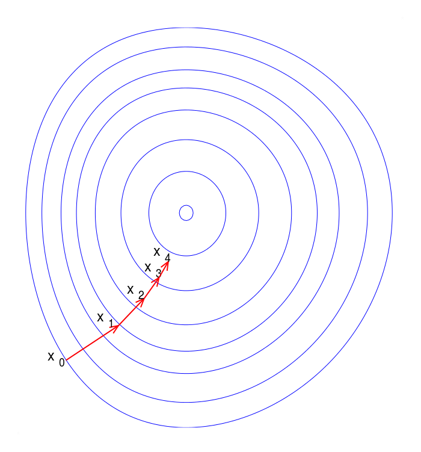
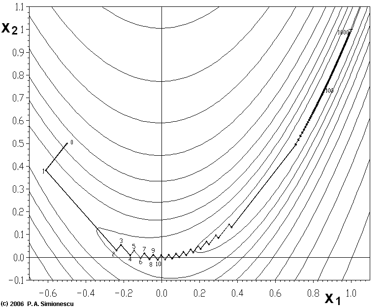
Fig. Left is a visualization of the gradient descent algorithm. Right presents the 'zig-zagging' nature of the method.(Figures from wiki) Dataset:
We collect the data points in the trace of gradient descent for optimizing two SVM algorithms. One is a linear SVM with parameter dimension of 784, and another is a kernel SVM with parameter dimension of 6107. The two SVM algorithms are applied to classify handwritten digits. The epochs of optimization is set to 1000. So there are 1000 points of 784 dim and 6107 dim respectively. Each point is associated with an error (optimization) value.
For easily understanding, just consider: Input of gradient descent algorithm:
A high dimension function f: R^784 -> R
Iterate for 1000 steps Output of gradient descent algorithm:
Trajectory w = w0,w1, ... ,w1000, each wi is a 1*784 dimension vector.
Error r = (r0,r1, ... , r1000), ri is the corresponding error to wi, which is only a scalar.
Visualize high dimension trajectories
1. 1D trajectory
First we just try a straightforward and naive idea: randomly take one dimension of w and plot it with the error (wi-eeror).
Relate color with error to see how the error changes. We can see the last 500 steps concentrate in smaller areas compared with the first 500 steps.
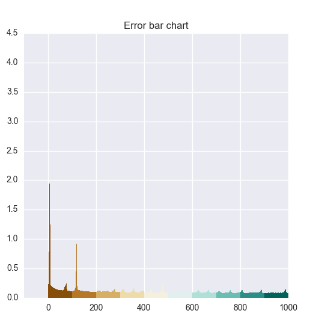
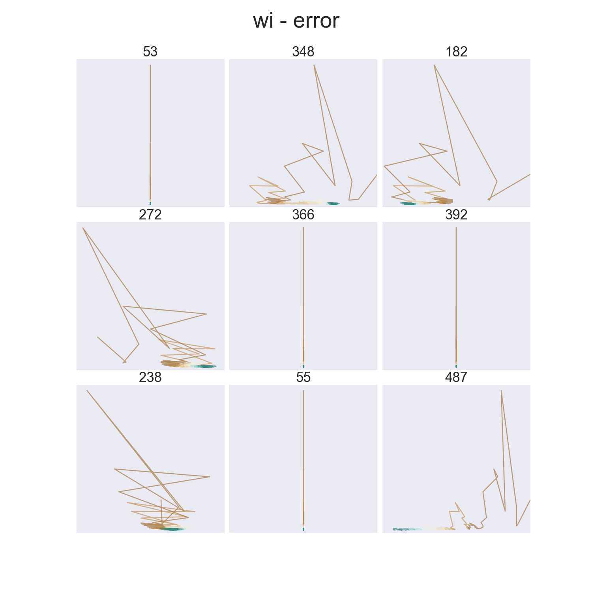
Fig. Left: The bar chart of error following the order of the trajectory (r0, r1, ... , r783). Right: Random pick a dimension i of w, plot wi-error.
We consider the length of the trajectories, sort all 784 trajectories by their length, then display the 9 shortest and longest ones.
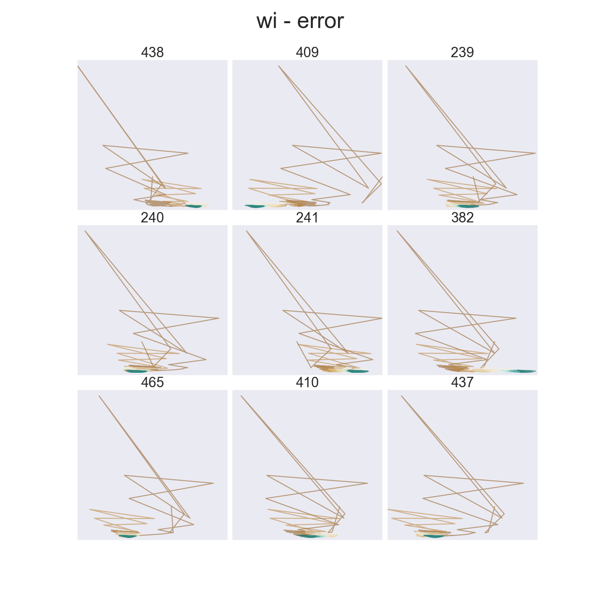
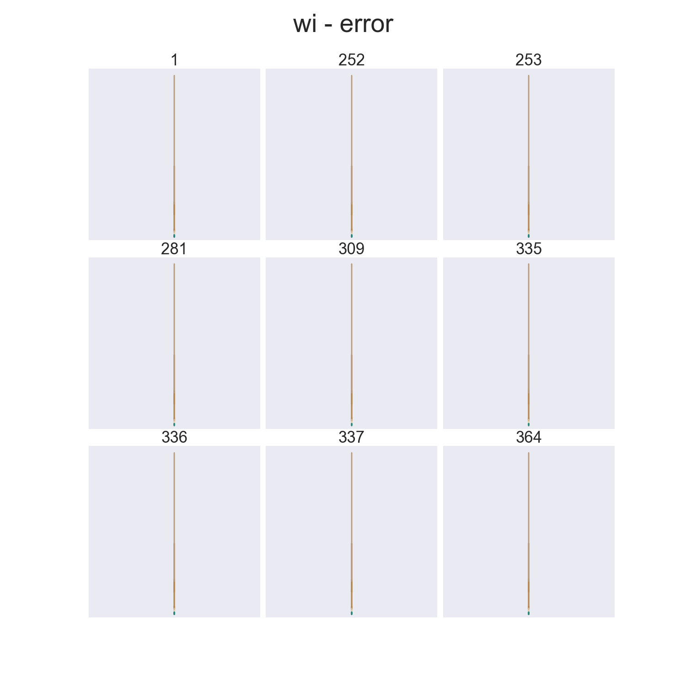
Fig1. Left: wi-error plot of the 9 1D-trajectories with longest length. Right: With shortest length.
Browse all following the order of increasing trajectory length:
(difficult to see patterns without order)
2. 2D trajectory
Follow the same procedures:
Plot wi-wi+1, which is a 2D trajectories.
Sort these trajectories by their length.
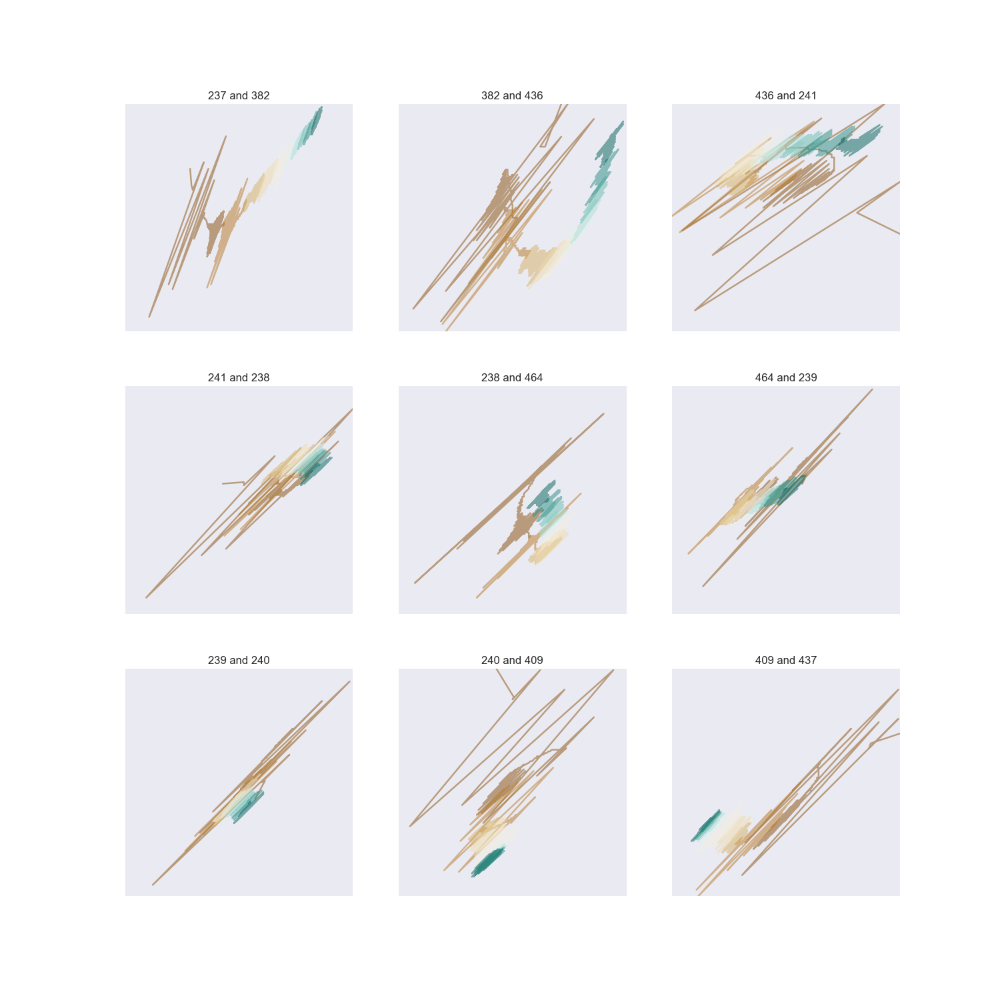
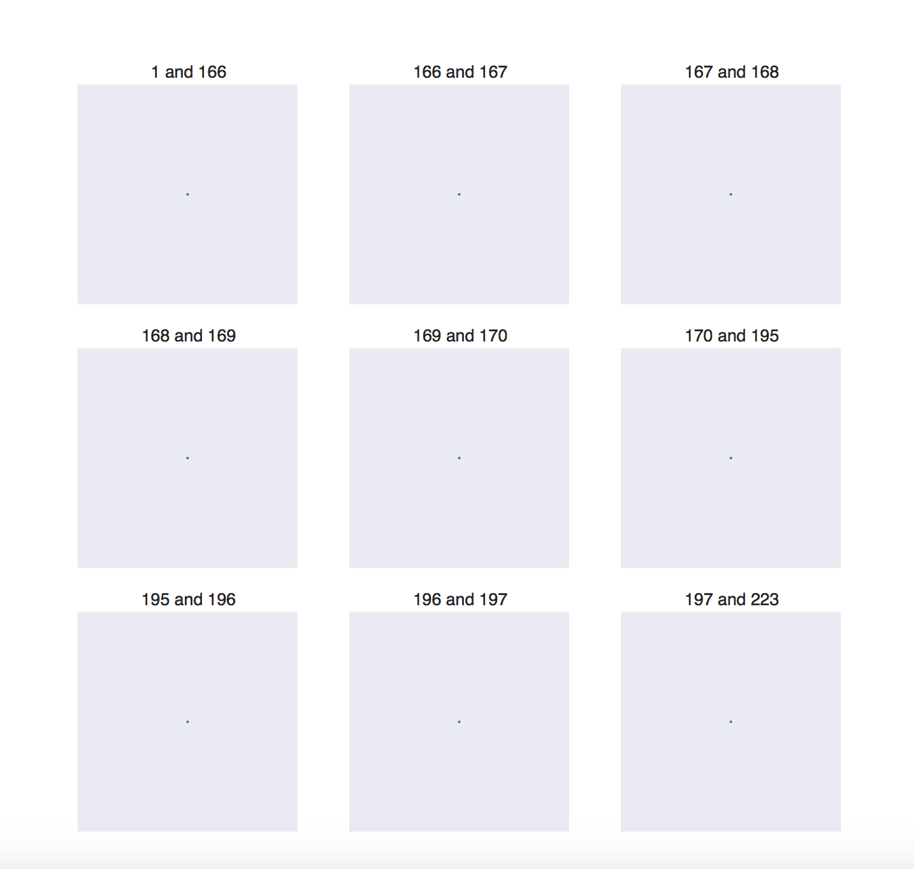
Fig Left: wi-wi+1 plot of the 9 2D-trajectories with longest length. Right: With shortest length.
Browse through. Difficult to see patterns, may need transformations.
3. Learning rate
Using 2D trajectories to see the effect of learning rate.
Learning rate = 1e-06
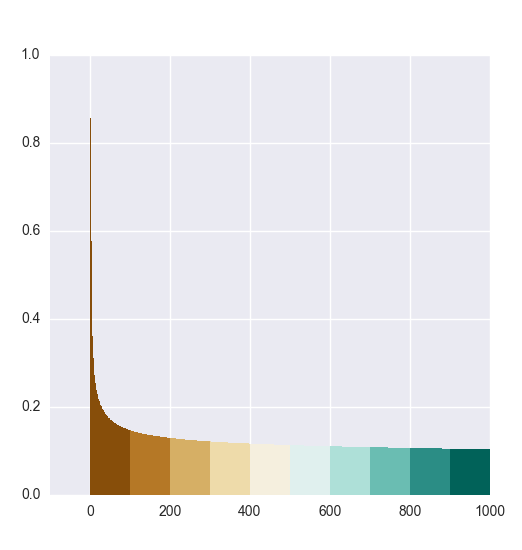
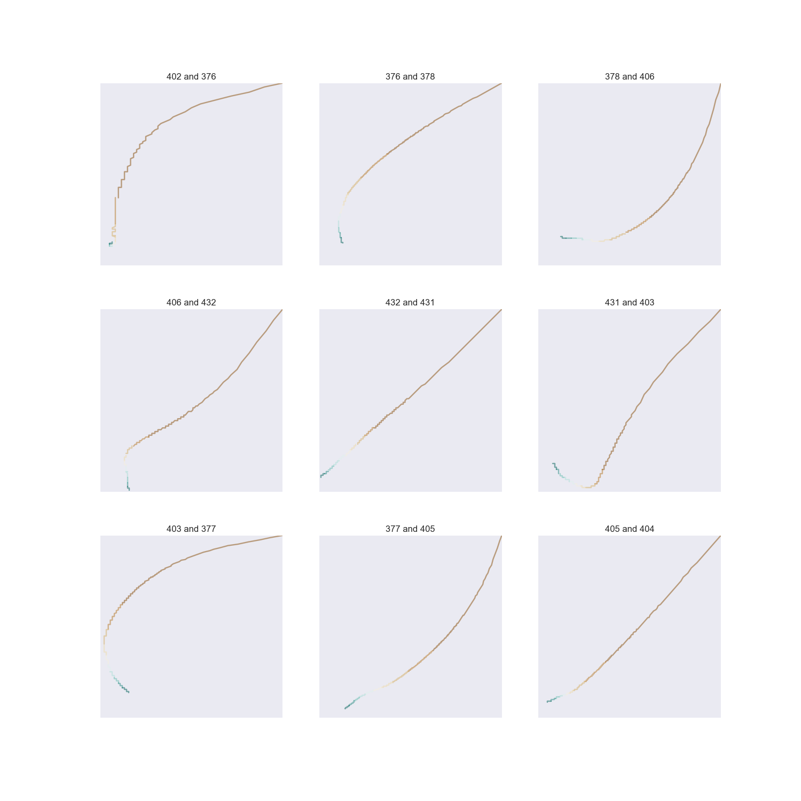
Learning rate = 1e-05
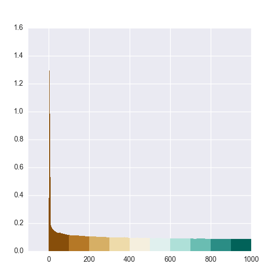
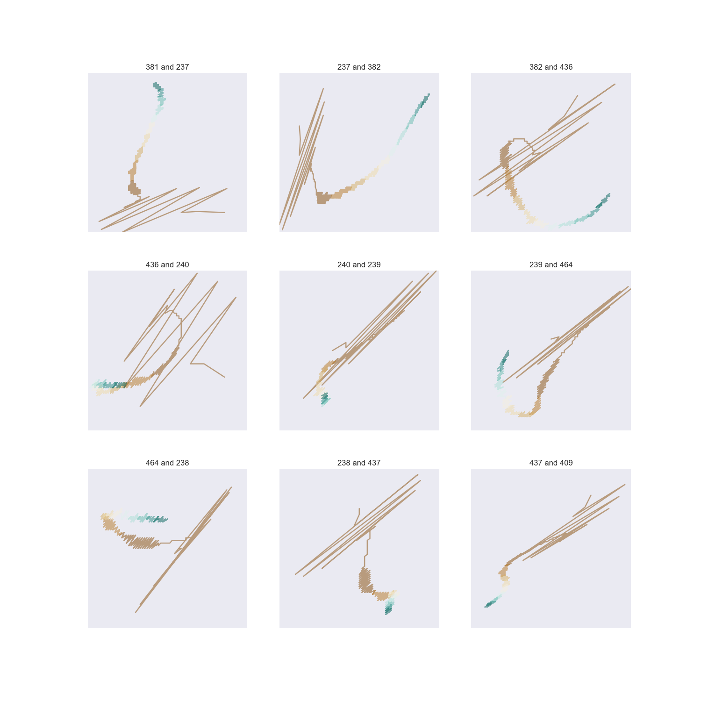
Learning rate = 1e-05 Fig Left: The bar chart of error following the order of the trajectory (r0, r1, ... , r783). Middle: wi-wi+1 plot of the 9 2D-trajectories with longest length. Right: Go through all wi-wi+1 2D-trajectories by the order of their lengths.
4. Discussions
a. Summary:
The last 500 steps concentrated in small areas.
Help us to observe the high dimension trajectories with different learning rate.
b. Color scheme (Diverging vs. Sequential)
Sequential color scheme
If the data has an order in it.
Diverging color scheme
Put stress on the largest and smallest values.
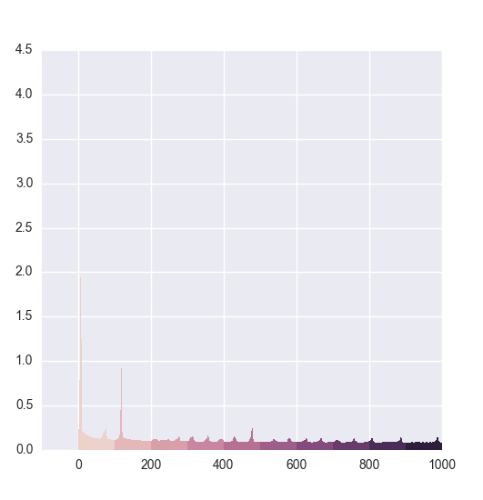
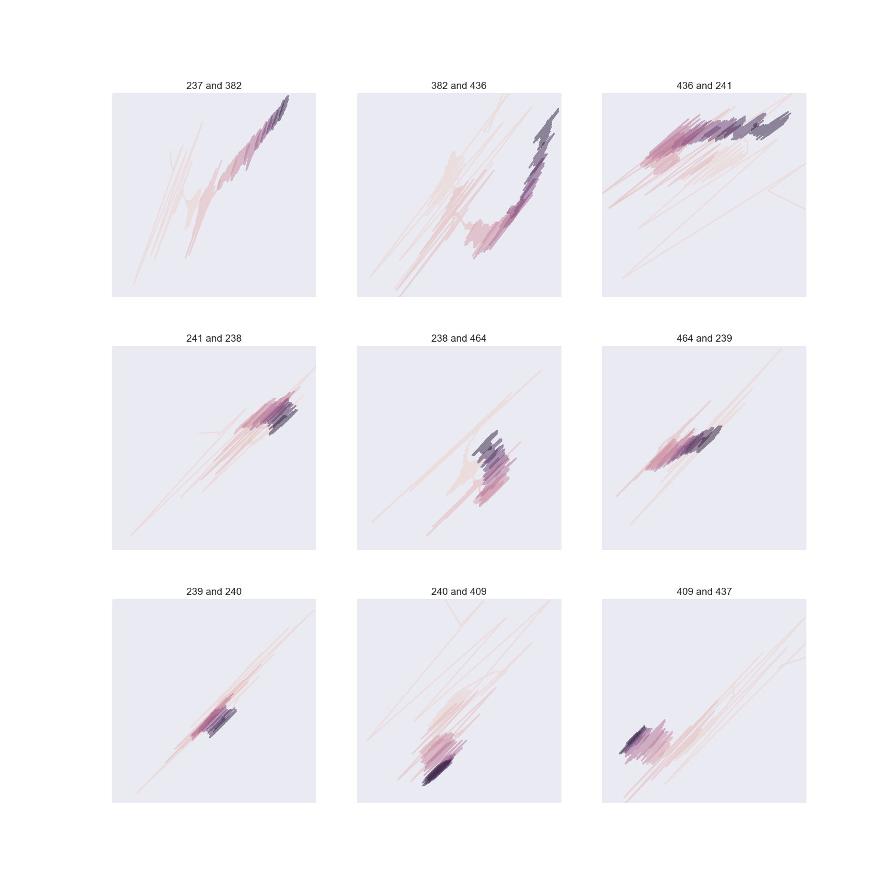
Fig Everything is in sequential color scheme. Left: The bar chart of error following the order of the trajectory (r0, r1, ... , r783). Middle: wi-wi+1 plot of the 9 2D-trajectories with longest length. Right: Go through all wi-wi+1 2D-trajectories by the order of their lengths.
c. 3D trajectory
Not better than 2D trajectories. Everything has to be projected onto a 2D plane.
Visualize the effectiveness of different learning rate
Overview
Checkbox for selecting different learning rates
Three views
Enable/disable different learning rates
Change the epochs of gradient descent (steps in the trajectory)
Display everything
Change perspective
Demo
Data analysis and visualization details
Collect learning trajectory of gradient descent with different learning rate
gradient decent in used to optimize a linear SVM for digit classification during the training procedure: source code, training data